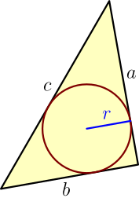
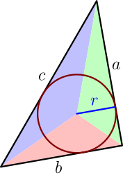

Inscribed Circle¶
As a part of this derivation, we got a formula for the radius of a circle drawn around a triangle. In this derivation, we will find a formula for a circle drawn inside a triangle.
Consider any triangle with any side lengths $a$, $b$ and $c$, and draw a circle inside it so that it touches each side as in the picture below. A circle like this is called the inscribed circle of the triangle. Our goal is to find its radius $r$.

Let's split the triangle into 3 smaller triangles by connecting the corners to the center of the circle:

Because the radius $r$ is perpendicular to the side with length $a$, the area of the green part is $ar/2$. Areas of the other parts are similarly $br/2$ and $cr/2$. Letting $A$ denote the area of the whole triangle, we get $$ A = \frac{ar}{2} + \frac{br}{2} + \frac{cr}{2} = \frac{(a+b+c)r}{2}. $$ Multiplying both sides by $2$ and dividing by $a+b+c$ gives the following result.
Consider any triangle. Let $a$, $b$ and $c$ denote its side lengths, let $A$ denote its area, and let $r$ denote the radius of the inscribed circle. Then $$ r = \frac{2A}{a+b+c}. $$